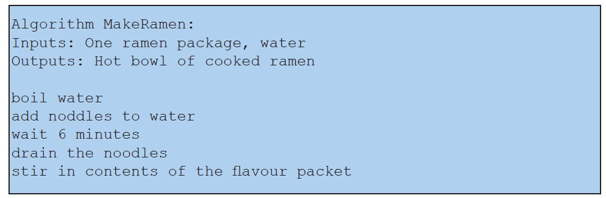
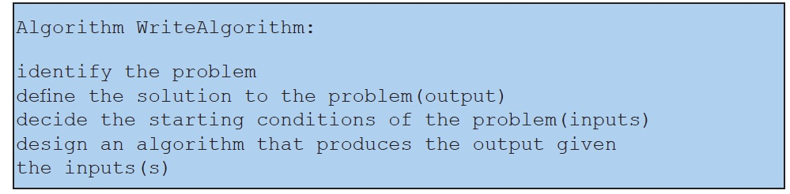

An algorithm’s input specifies resources or information that need to exist in advance before the algorithm can be carried out. An algorithm’s output specifies the results that must have occurred by the time the algorithm is finished. Input and output are crucial to the concept of encapsulation because together, they define the boundaries of the encapsulated algorithm. Think of the encapsulated algorithm as a business contract: “if you give me these things [the inputs], then I will make for you these other things [the outputs]."
Often, we include these inputs and outputs as part of the description of an algorithm, right after the algorithm’s name. For our running ramen example, this would look as follows:

Notice that the algorithm says nothing whatsoever about how the initial package of ramen was acquired. From the perspective of the algorithm, how the ramen package was obtained doesn’t matter. As long as you had such a package available, you could follow the algorithm to cook the ramen. Notice too that the algorithm might also produce things that weren’t specified by the output: it will likely result in a dirty pot in addition to the hot bowl of noodles. The output is not supposed to be an exhaustive list of everything that will result from following the algorithm. Instead, it is supposed to list the goal or purpose of following the algorithm. Any other results are incidental. In other words, the input and output are defined by the problem that the algorithm is solving, not by the algorithm itself.
We are now ready to write a very abstract algorithm for writing algorithms!

Contrast this with the following algorithm, which is a much worse way of designing algorithms.
We highly advise against it.